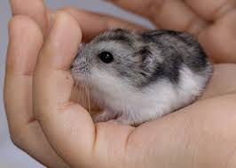

Oto kilka ciekawostek o chomikach:
Worek policzkowy: Chomiki maj¹ specjalne worki policzkowe, w których przechowuj¹ jedzenie. Mog¹ pomieœciæ znaczne iloœci pokarmu, co pozwala im na gromadzenie zapasów.
Aktywnoœæ nocna: Chomiki s¹ zwierzêtami nocnymi, co oznacza, ¿e s¹ najbardziej aktywne w nocy. W ci¹gu dnia zazwyczaj œpi¹.
Ró¿ne gatunki: Istnieje wiele gatunków chomików, z których najpopularniejsze to chomik syryjski (z³oty), chomik d¿ungarski, chomik Roborowskiego i chomik Campbell.
Krótki czas ¿ycia: Chomiki ¿yj¹ stosunkowo krótko, zazwyczaj od 2 do 3 lat, chocia¿ niektóre mog¹ do¿yæ nawet 4 lat.
Terytorialnoœæ: Chomiki syryjskie s¹ terytorialne i nie powinny byæ trzymane razem, poniewa¿ mog¹ siê ze sob¹ k³óciæ. Inne gatunki, jak chomiki d¿ungarskie, mog¹ ¿yæ w grupach.
Doskonali uciekinierzy: Chomiki potrafi¹ skakaæ na wysokoœæ do 30 cm i wykopuj¹ tunele w ziemi, co czyni je bardzo sprytnymi uciekinierami.
Wra¿liwoœæ na stres: Chomiki s¹ wra¿liwe na stres i mog¹ reagowaæ na zmiany w swoim otoczeniu, co mo¿e wp³yn¹æ na ich zdrowie.
Zmys³ wêchu: Maj¹ doskona³y zmys³ wêchu, co pomaga im w poszukiwaniu po¿ywienia i orientacji w terenie.
Powrot